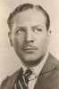

Country:United States, 68 minutes
Spoken languages:
Genres:Mystery, Crime, Thriller
Director(s):Roy William Neill
Writer(s):Arthur Conan Doyle, Bertram Millhauser
Video Codec:Unknown
Number: 1735


Certification:
Storyline:
Sherlock Holmes investigates when young women around London turn up murdered, each with a finger severed. Scotland Yard suspects a madman, but Holmes believes the killings to be part of a diabolical plot.
Cast: 


Medium: Original DVD,
Comments: Part of: Mystery Classics - 50 Movie Pack
Loaned: No
Aspect ratio: Unknown